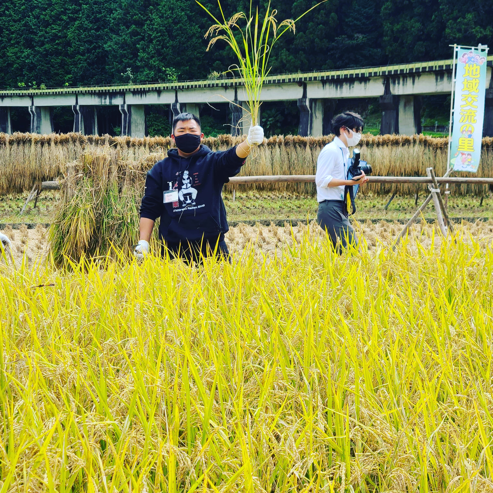

About me

My name is Yoshi and I study Web Design and Web Programming at Saint Paul College in St. Paul, Minnesota. My planned graduation date is May 2024 with the Web Design and Web Development Certificates. I made this website as a portfolio of my skills developing websites.
I have taken the following classes at Saint Paul College:
• Web Fundamentals, where I learned HTML and CSS
• Computer Science and Information Systems
• Introduction to Computing and Programming Concepts
Next semester I will be taking Client Side Programming and Web Design. I am also planning to take other curriculum for Web Development such as Java programming and Java Script.
My hobbies include video gaming, playing volleyball, practicing guitar, and playing yugioh.